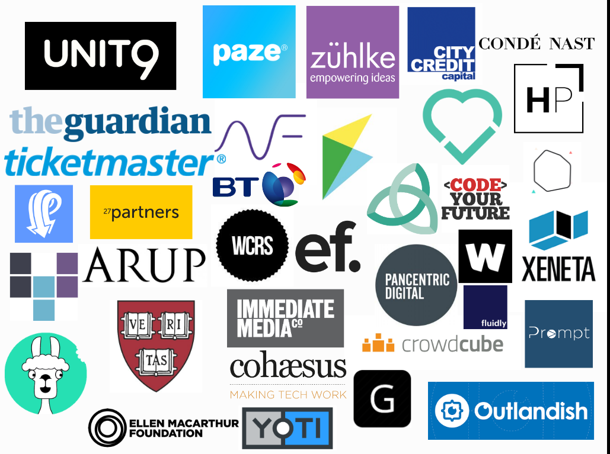
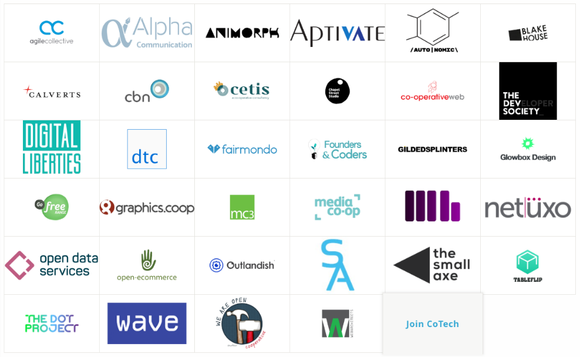

Founders And Coders
The importance of community
Welcome
And Congratulations!
London
Nazareth
Gaza
Al Khalil
You have a place here
And we want to support you
Imposter Syndrome
Everyone has it!
Ego will hold you back
Whether it’s the need to appear fantastic or the fear of looking foolish.
Ask for help
Don’t be afraid to say when you don’t understand something. You’ll be doing yourself and everyone else a favour.
Make mistakes
Don’t be afraid to try things, don’t worry about getting things wrong. You learn by giving it a go.
FAC is a community
With a wide network that goes beyond this space
FAC Alumni
We're also members of
A network of Cooperative Technologists
Building a tech industry that's better for its workers and customers through co-operation, democracy and worker ownership.
Some other members of CoTech
The aim of the course:
For everyone to understand and be able to run all of the projects.
Work together
So everybody gets the most out of this experience
Be patient
People learn in different ways, and at different speeds
Cooperate
We expect you to prioritise collective learning over individual goals
Summary
- You are members of the FAC organisation and community
- You are part of a network that extends far beyond this space
- Work together
- Be humble and learn